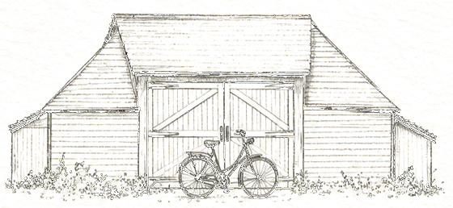
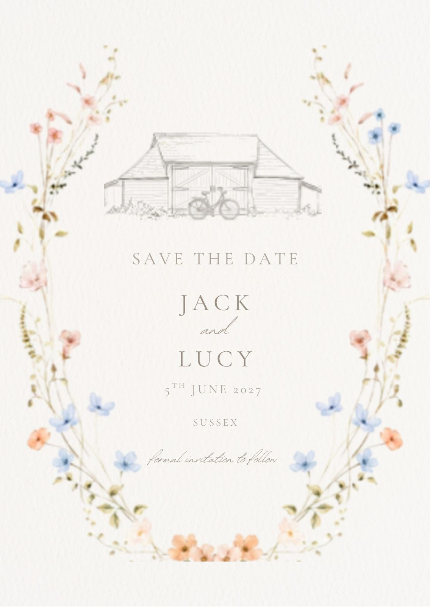
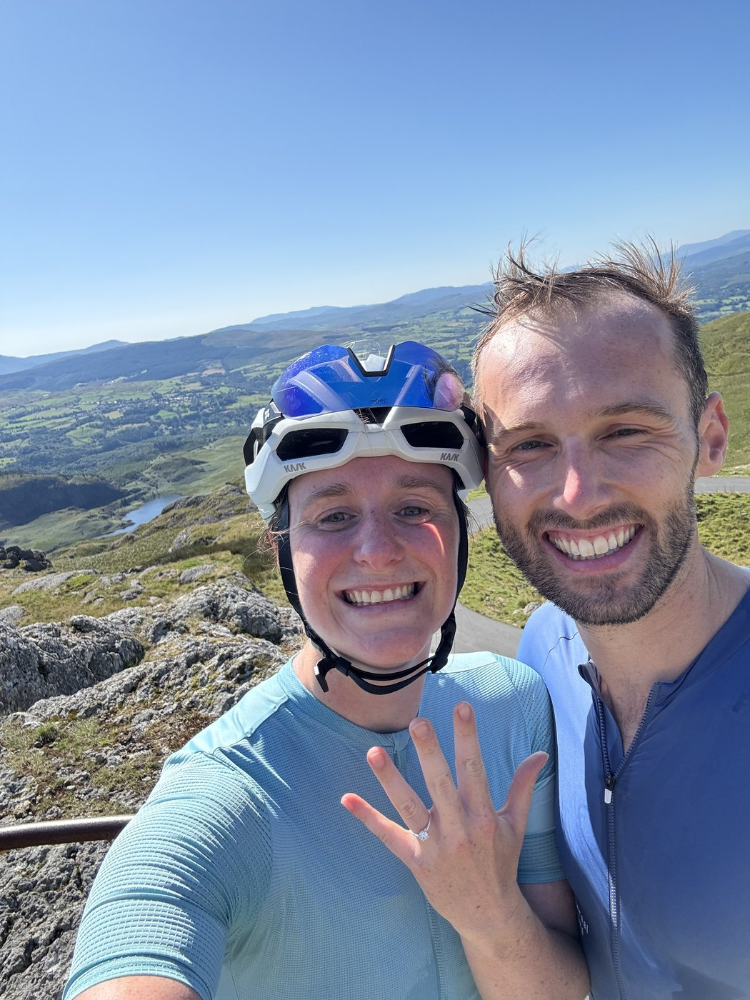
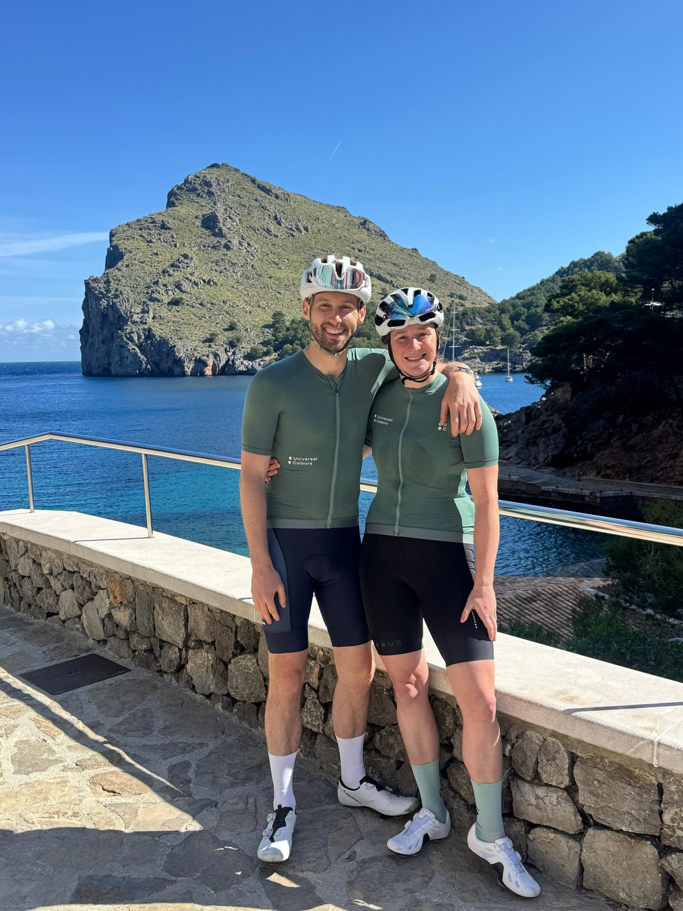
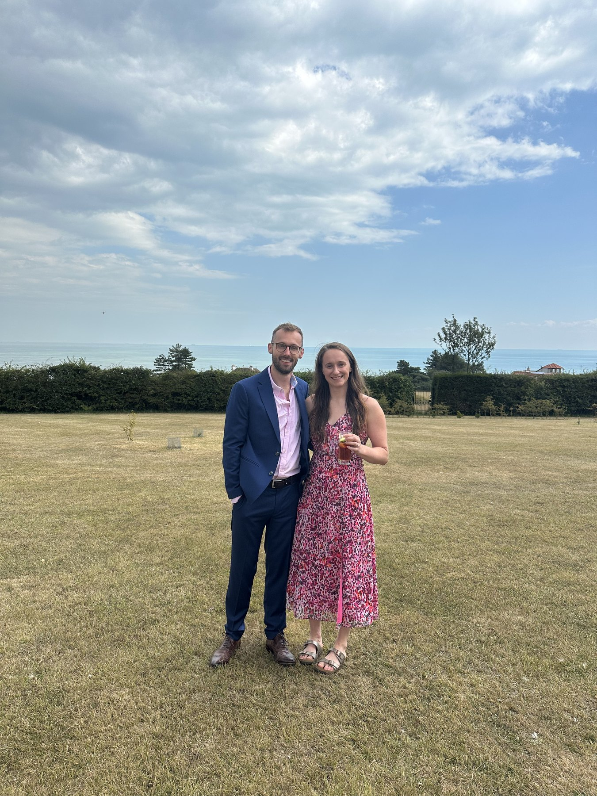
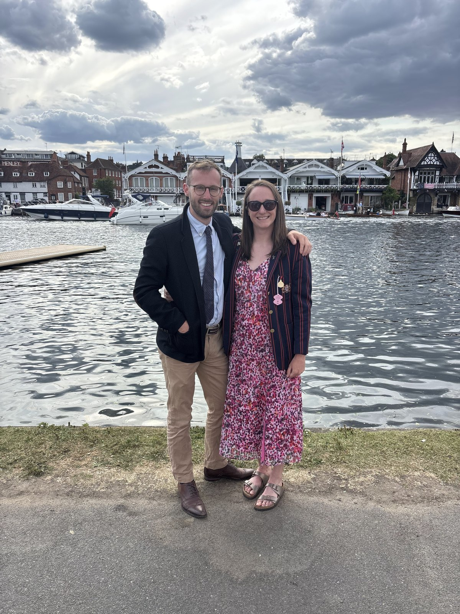

One o'clock · the ceremony
St Mary Magdalene, Bolney
Church Lane, Bolney, West SussexRH17 5QR
Plenty of free parking right beside the church, with disabled spaces and step-free access into the building. There's a pub next door if you arrive early.

5th June 2027
Bolney & Wiston · West Sussex
we'd love you to be there
Saturday
Two places, about half an hour apart. We marry at the church in Bolney at one o'clock, then everyone drives over to The Secret Barn near Steyning for the rest of the day.
St Mary Magdalene, Bolney. Please be seated by 12:50.
About forty minutes. to confirm
In the churchyard, which is a lovely spot for it.
About 30 minutes, roughly 14 miles. Directions are further down this page.
Pimm's, and elderflower for anyone who'd rather not.
A barbecue with big platters of salads and sides, served in the barn.
Mercifully short. Probably.
The barn gets turned round for dancing while everyone's outside.
The bar stops serving at 11:15pm.
The barn closes at midnight and everyone needs to be away by then, so please book taxis in advance.
Two things worth knowing now. There's a long, happy stretch between the barbecue and midnight with no further food, so eat properly at four. And the bar is a cash bar — card payment, so bring a card.
Where to go
Both have free parking. The barn is genuinely down a country lane, so allow more time than the satnav thinks you need.
One o'clock · the ceremony
Plenty of free parking right beside the church, with disabled spaces and step-free access into the building. There's a pub next door if you arrive early.
about 30 minutes by car
Three o'clock onwards · everything else
A working farm at the foot of the South Downs. Parking is on site and included, including overnight if you leave the car and take a taxi home. The farm track is shared with tractors and farm vehicles, so take it gently and keep an eye on children near the track east of the lawn.
Getting here
Driving
Bolney sits just off the A23 and the A272, so it's straightforward from London, Brighton and Gatwick. From the church to the barn you head south-west through Cowfold and Henfield — about half an hour.
Free parking at the church and at the barn. Cars can stay at the barn overnight.
By train
For the church: Haywards Heath is the nearest station, about six miles away, with fast trains from London Victoria, London Bridge and Brighton.
For the barn: Steyning has no station of its own. The closest are Shoreham-by-Sea and Worthing, both a short taxi ride away.
Taxis
Book ahead, please. The barn is remote and cabs don't pass by, so nothing will turn up on spec at midnight — and phone signal on the farm is not a given.
Firms we'd recommend: to confirm
Gatwick and airports
Gatwick is the obvious airport, about 20 minutes from Bolney and 45 from the barn. Heathrow is roughly an hour and a half.
If you're coming a distance
There's no accommodation at the barn itself. Steyning and Bramber are closest to the evening, Bolney and Cuckfield closest to the church — either works.
Near the barn
The Tollgate in Bramber has 16 rooms and is about ten minutes from the barn — the easiest option for getting back after midnight. Its sister pub, The Castle Inn, is on the same street. Steyning, a mile further on, has more pubs with rooms and cottages to let.
Near the church
Bolney, Cuckfield and Haywards Heath have a good spread of pubs with rooms, small hotels and B&Bs, plus the usual chain hotels around Burgess Hill. Handy if you'd rather be settled before the ceremony than after the dancing.
Camping at the barn
The farm has a paddock that can take up to 40 campers overnight. We haven't decided whether to open this up yet. to confirm
Book early if you can. Early June is peak season in Sussex and rooms near Steyning go quickly once the school holidays and the Downs walking season get going.
A gentle steer
Summer wedding smart. Suits and dresses, nothing black tie, nothing too formal. Our bridesmaids and the buttonholes are in the soft pinks, corals, cornflower blue and sage from our save-the-date, so if you'd like to go anywhere near that, lovely.
Two practical notes. Much of the day is on grass and a farmyard, so fine heels will have a difficult afternoon — block heels, flats or something you don't mind in a field will serve you far better. And this is June in England: the barn is open to the evening air and it cools off properly after nine, so bring a layer even if the forecast is glorious.

The things people ask
Can we bring the children?
Children are welcome. Do let us know ages when you reply so the caterers can plan — the under-fives are fed without fuss. Please keep an eye on little ones near the farm track.
Is the bar free?
Drinks on the lawn, wine on the tables and a glass for the toast are all on us. After that it's a cash bar, open all day and taking cards, so bring one. Last orders at 11:15pm.
I have a dietary requirement
Tell us when you reply and we'll pass it on. Lucy is gluten-free, so we've built the whole menu with that in mind — you're in good hands. If an allergy is severe, the caterers are happy for you to bring your own food as well.
Can I bring a plus one?
Your invitation will name everyone we've got a seat for. The barn holds 110 for a sit-down, which is the whole constraint in a nutshell — do ask if you're unsure.
What about presents?
You coming is the thing. If you'd like to do something anyway, we'll put details here closer to the time. to confirm
Confetti?
Yes please, outside the church — we'll confirm what the churchyard allows. to confirm
What time does it all end?
Midnight, firmly — the barn's licence says so. Book your taxi before the day.
Anything else
Just ask us. Details below.
Meanwhile
Mostly found on bicycles, occasionally dressed up.




Please reply by date to confirm
No forms, no apps. Send us an email and tell us three things: who's coming, any dietary requirements, and the ages of any children.
If you're stuck on anything — travel, rooms, who to sit next to — the same address reaches us both.